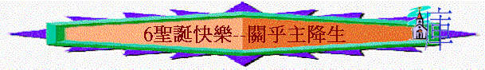

引言：分享你最難忘的聖誕節或看過最深刻的聖誕燈飾，究竟聖誕節對世人有甚麼真正的意義？
or
活動：唱一兩首經典的聖誕詩歌
一.帶來喜樂(路2:8-11)
1.
在2000多年前以色列的伯利恆地發生甚麼事情？牧羊人看見甚麼事？
2.
天使對他們說甚麼？在大衛城�媟|有誰降生？祂是誰？
3.
耶穌降生是一件甚麼的信息(v.10)？
4.
今日當我們打開報紙細閱，多「大喜」的信息還是「不好」的信息？通常新聞版多報導甚麼消息？
5.
你認為人的罪惡是帶來痛苦還是喜樂？何以見得？
6.
耶穌降世為何帶來萬民喜樂(太1:21)？
7.
有沒有見過一些人以前曾犯罪，但信主後可以從罪惡�堭o拯救，因而得喜樂？
二.帶來平安(路2:13-14)
1.
牧羊人又聽到甚麼？
2.
聖經題到「平安」，你認為何謂「平安」？
3.
人有平安的時刻，也有不平安的時候，人通常會因為甚麼事而引致不平安？
4.
試分享你最近一件不平安的經歷？
5.
耶穌降世留下甚麼給相信祂的人(約14:27)？
6.
組長也可分享經歷主所賜平安的事情
7.
你又認為今天人與人之間有否平安/和平/和睦？
8.
而犯罪的人與天上的神是否可以在關係上無阻隔，非常和睦(弗2:3,13)？為甚麼？
9.
耶穌降生後，做了甚麼事情，使信徒與信徒，神與人可以和睦及有平安(弗2:13-17)
10.
「靠著祂的血」、「以自己的身體」代表甚麼？
11.
若天上真是有神，你認為自己今日與神的關係是否十分親近，毫無阻隔？